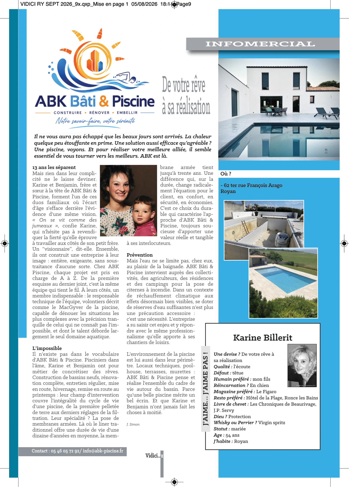

Le début de l’histoire.
L’entreprise est créée en 1986 par Jacques Tournabien. Au fil des chantiers, un savoir-faire se construit autour de la création, de la rénovation et de la vie des piscines.

À propos d’ABK
Des espaces à vivre aux équipements qui protègent un site, notre rôle est de donner une direction claire à votre projet et de vous accompagner dans sa réalisation.
Une histoire commencée en 1986
Avant d’être une histoire de famille, ABK est une histoire de métier, de confiance et de piscines pensées pour durer.
L’entreprise est créée en 1986 par Jacques Tournabien. Au fil des chantiers, un savoir-faire se construit autour de la création, de la rénovation et de la vie des piscines.
D’abord salarié de l’entreprise, Stéphane se fait remarquer par sa capacité à trouver des solutions. Son patron le surnomme le « MacGyver de la piscine ». Il reprend ensuite l’entreprise et poursuit son développement.
Karine, la femme de Stéphane, et son frère Benjamin ont repris l’entreprise il y a quelques années. Frère et sœur à la tête d’ABK, ils prolongent cette aventure familiale, avec Stéphane à leurs côtés pour la partie technique.
« De votre rêve à sa réalisation. »
La création de bassins, leur rénovation, la pose de membranes armées, l’entretien, la mise en route et l’hivernage font partie du quotidien de l’équipe. Les terrasses, les pool-houses et les locaux techniques relient le bassin à son environnement.
Notre regard sur votre projet
Vous avez une idée, un besoin ou un lieu à transformer. Avant de parler de solutions, nous prenons le temps de comprendre ce qui compte pour vous.
Usage, terrain, existant, enveloppe et calendrier : ces éléments donnent au projet sa cohérence. L’accompagnement ABK relie la préparation, les choix techniques et l’organisation des interventions.
Nous défendons une relation simple : des échanges compréhensibles, un périmètre explicite et des décisions prises au bon moment.

Trois expertises, un fil conducteur
Penser la baignade avec le jardin, les équipements avec l’entretien et la terrasse avec la maison. Nous accompagnons la création comme la rénovation, à partir des usages et des contraintes du lieu.
Explorer les projets piscine →Transformer un bien demande de relier les travaux visibles aux interventions techniques. Nous préparons le périmètre et la coordination pour donner de la lisibilité au chantier.
Découvrir notre approche de la rénovation →Le volume, l’implantation et les équipements d’une réserve d’eau se définissent avec les contraintes du terrain et les prescriptions des services compétents. La préparation et la pose forment un même projet.
Comprendre le pack incendie →
Ce qui guide notre travail
Poser les questions utiles, identifier les contraintes et distinguer les besoins essentiels des options. Une étude commence par un projet que chacun comprend.
Anticiper les accès, les interventions et les choix de matériaux. L’organisation doit permettre aux métiers et aux équipements de trouver leur place au bon moment.
Suivre les étapes, rendre les décisions lisibles et accompagner la prise en main. La qualité d’une réalisation tient aussi à la compréhension de son usage et de son entretien.
Dans la presse
Un journaliste, lui-même client, a découvert l’équipe et son travail. De cette rencontre est né ce portrait d’ABK, de Karine, de Benjamin et de leur manière d’accompagner les projets.
« De votre rêve à sa réalisation » · J. Simon · Vidici, septembre 2026 · Infomercial.

Sur ordinateur, survolez l’article pour lire à la loupe. Sur mobile ou tablette, posez le doigt sur l’article puis déplacez-le.
Retrouvez le questionnaire adapté à votre projet sur chaque page métier.